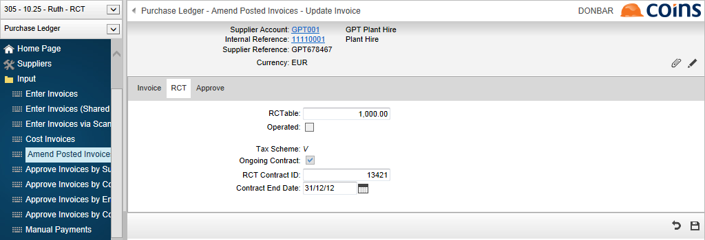

Paying under eRCT
The process is:
- Enter invoices and post them.
- Select invoices for payment and freeze the payment batch.
- Process the payment notification.
- Pay invoices (print /remittances, generate ).
For payments to subcontractors using the Subcontract Ledger, see eRCT - Paying Subcontractors.
Invoice Entry
Invoices with a subcontract element that are processed through are subject to RCT processing rules. As with subcontract certificates, these need to be entered, posted and selected for payment before you process the Payment Notification.
When you enter invoices with a subcontract element, will issue the following warnings:
- If the subcontractor account linked to the does not have a valid Tax Reference, you will be able to enter the invoice but will warn you that you must enter the Tax Reference against the subcontractor before you can pay the invoice.
- If there is a contract notification end date against the order, or the linked subcontractor record has an ongoing contract notification end date, then:
- If the date is in the past but within the last six calendar months, warns you that the invoice must be paid within six months of the end date, or the Contract Notification must be updated.
- If the date is more than six months in the past, either warns you that the invoice cannot be paid unless the notification end date is amended, or prevents you entering the invoice (depending on the setting of SCIRE/STOPUNPO).
Invoices with No Purchase Order
No information about the Contract Notification will have been stored in unless the subcontractor has on ongoing contract, details of which are stored against the subcontractor. You must check the Contract Notification details manually and input, on the tab of the invoice, the necessary information (the Contract ID and optionally the End Date) for the Payment Notification to be processed by , unless details of the ongoing contract have been defaulted in and do not need to be over-ridden.
Invoices against a Purchase Order
If the account of the company/office selected is linked to a subcontractor account as a supplier of subcontract , you can configure to create a record on the Contract Notification Workbench (for electronic submission) on commitment of the order or you can enter the basic details of the Contract Notification (Contract ID and End Date) either:
The registration details are then defaulted in for any future invoices against that order.
Selecting Invoices for Payment
If you select invoices for payment that fall within the scope of RCT, but for which either the Contract ID is not recorded, or the Contract Notification has expired, those invoices cannot be paid.
If you are using Manual Payment Selection, the warning/error will appear on screen; if you are using Batch Payment Selection the warning/error will be shown in the report.
If there are invoices you are unable to select, you need to use Amend Invoices to add the missing contract notification details and then re-select the invoices for payment.
See Selecting Invoices for Payment; the process is very similar to that used for subcontractors.
Payment Notification
The process is very similar to that used for subcontractors: see eRCT - Payment Notification
Making Payments
will not let you print and/or remittances, or generate payments, for any payments that require authoration but have not been authored by Revenue.
Amending Posted Invoices
During Payment Notification, the Contract ID is validated by Revenue. If the response shows that the Contract ID has been input incorrectly, you need to input the correct Contract ID.
You also need to input the Contract ID for invoices that were input prior to the introduction of eRCT, but are paid under eRCT.
To correct contract notification details on posted invoices:
- Go to Amend Posted Invoices.
- Click the link for the invoice to update.
- Click the tab.

- Enter the RCT Contract ID and Contract End Date.
- If the invoice is linked to a purchase order, copies any updates back to the order in the same way as when the invoice is input.